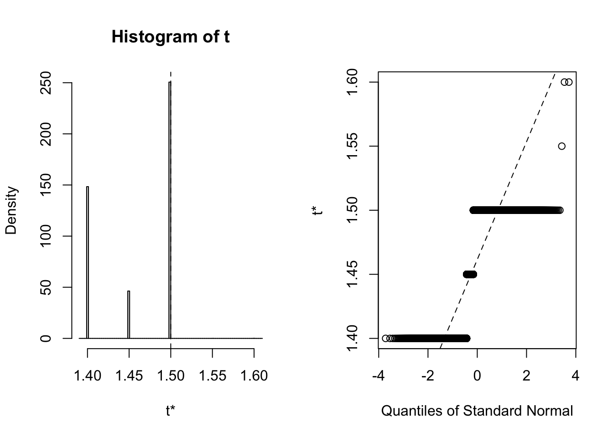
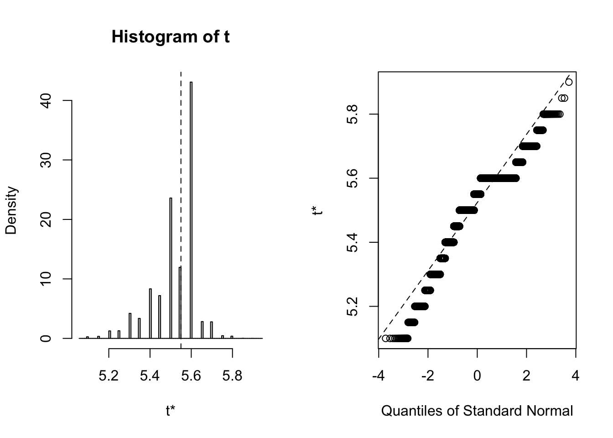
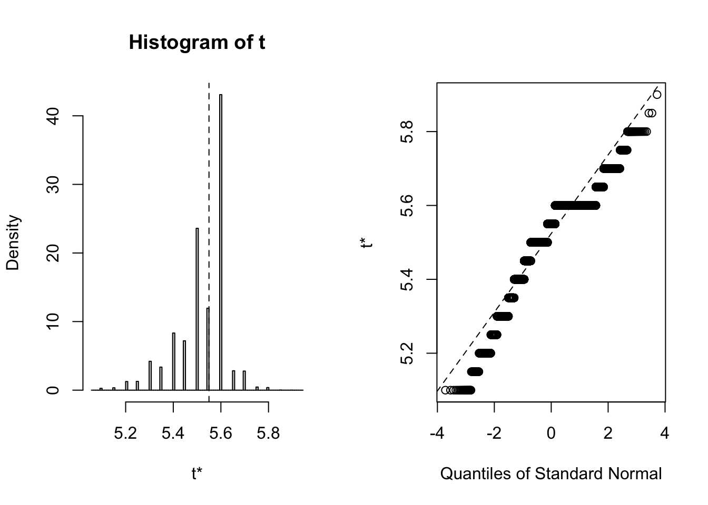

purrr-ing through bootstrap confidence intervals
Peter Kamerman
18 October 2017 Packages in the
Packages in the tidyverse provide the backbone for much of the grunt work I do on new datasets. Just about all my needs for importing, wrangling, plotting, and summarising the data can be accomplished from withn the tidyverse, and this functionality is augmented by the growing number of packages that play nicely with the tidyverse. For example, when it comes to generating bootstrap confidence intervals for a statistic (e.g., mean), there are packages such as broom (see this vignette), tidyboot, and slipper.
To the best of my knowledge these packages calculate basic or percentile bootstrap confidence intervals, which are super easy to calculate and work well if the statistic you are calculating is well behaved (i.e., the bootstrap distribution is smooth, symmetrical, and centered on the observed statistic). But, if the bootstrap distribution of your statistic is not well behaved, a potential problem when you are dealing with small sample sizes (a situation I often find myself in), then you need an interval that is a bit more robust 1. These more robust intervals, such as bias-corrected accelerated (BCa) confidence intervals, are much tricker to calculate than basic and percentile intervals, and that is where the boot package comes in. The boot package gives you the option of calculating five types of non-parametric bootstrap confidence intervals (first-order normal approximation, basic, studentized, percentile, and BCa intervals); it’s the bomb.
Yet, my use of boot to calculate confidence intervals has been thwarted by the fact that boot doesn’t play nicely with routinely used tidyverse functions such as dplyr::summarise. I think the issue is related to the use of non-standard evaluation within tidyverse packages, but whatever the reason, I have always battled to integrate boot into my tidyverse workflow 2.
My troubles came to an end the other day when I realised that I could harness list-columns and the purrr package to use the boot package within the tidyverse. I must admit that I have long thought that list-columns were the Devil’s work, but maybe that was because I didn’t have a practical use for them until now. Whatever your thoughts on list-columns, what follows is a reproducible example of using purrr, tidyr, dplyr, and boot to calculate BCa confidence intervals of median sepal width for each of the iris species in the iris dataset.
But, before getting down to calculating the confidence intervals, let’s get a feel for the iris dataset:
# Top 6 rows of "iris"
head(iris)## Sepal.Length Sepal.Width Petal.Length Petal.Width Species
## 1 5.1 3.5 1.4 0.2 setosa
## 2 4.9 3.0 1.4 0.2 setosa
## 3 4.7 3.2 1.3 0.2 setosa
## 4 4.6 3.1 1.5 0.2 setosa
## 5 5.0 3.6 1.4 0.2 setosa
## 6 5.4 3.9 1.7 0.4 setosa# Structure of "iris"
dplyr::glimpse(iris)## Observations: 150
## Variables: 5
## $ Sepal.Length <dbl> 5.1, 4.9, 4.7, 4.6, 5.0, 5.4, 4.6, 5.0, 4.4, 4.9, 5…
## $ Sepal.Width <dbl> 3.5, 3.0, 3.2, 3.1, 3.6, 3.9, 3.4, 3.4, 2.9, 3.1, 3…
## $ Petal.Length <dbl> 1.4, 1.4, 1.3, 1.5, 1.4, 1.7, 1.4, 1.5, 1.4, 1.5, 1…
## $ Petal.Width <dbl> 0.2, 0.2, 0.2, 0.2, 0.2, 0.4, 0.3, 0.2, 0.2, 0.1, 0…
## $ Species <fct> setosa, setosa, setosa, setosa, setosa, setosa, set…As you can see, iris is a dataframe consisting of five columns, and 150 rows. The first four columns report sepal and petal dimensions of irises, and the fifth column provides the names of the three species of iris associated with each measurement (50 measurements per species).
Nesting the data
As I wrote above, the aim is to calculate BCa confidence intervals of median sepal width (“Sepal.Width”) for each species (for convention, I’ll calculate 95% confidence intervals). The 1st step in the calculation is to create a list-column of the petal and sepal dimension data nested (grouped) by species using dplyr::group_by and tidyr::nest
# Load magrittr package for pipe functions
library(magrittr)
# Nest the data
iris_nest <- iris %>%
# First I group the data by species
dplyr::group_by(Species) %>%
# Then I nest the dataframe
tidyr::nest()If we print the resulting iris_nest dataframe (see below), the original 150 x 5 iris dataframe has been transformed into a 3 x 2 dataframe, with the 1st column being our nesting variable “Species”, and the 2nd column (named “data” by default) being a list-column of 50 x 4 dataframes (<tibble [50 x 4]>).
# Print "iris_nest"
iris_nest## # A tibble: 3 x 2
## Species data
## <fct> <list>
## 1 setosa <tibble [50 × 4]>
## 2 versicolor <tibble [50 × 4]>
## 3 virginica <tibble [50 × 4]>Inspecting the tibbles in the list-column (see below) reveals that each row of the list-column contains the sepal and petal dimensions for the iris species named in the corresponding row of the “Species” column.
# Print the top six rows of the each row in the "data" list-column
lapply(iris_nest$data, head)## [[1]]
## # A tibble: 6 x 4
## Sepal.Length Sepal.Width Petal.Length Petal.Width
## <dbl> <dbl> <dbl> <dbl>
## 1 5.1 3.5 1.4 0.2
## 2 4.9 3 1.4 0.2
## 3 4.7 3.2 1.3 0.2
## 4 4.6 3.1 1.5 0.2
## 5 5 3.6 1.4 0.2
## 6 5.4 3.9 1.7 0.4
##
## [[2]]
## # A tibble: 6 x 4
## Sepal.Length Sepal.Width Petal.Length Petal.Width
## <dbl> <dbl> <dbl> <dbl>
## 1 7 3.2 4.7 1.4
## 2 6.4 3.2 4.5 1.5
## 3 6.9 3.1 4.9 1.5
## 4 5.5 2.3 4 1.3
## 5 6.5 2.8 4.6 1.5
## 6 5.7 2.8 4.5 1.3
##
## [[3]]
## # A tibble: 6 x 4
## Sepal.Length Sepal.Width Petal.Length Petal.Width
## <dbl> <dbl> <dbl> <dbl>
## 1 6.3 3.3 6 2.5
## 2 5.8 2.7 5.1 1.9
## 3 7.1 3 5.9 2.1
## 4 6.3 2.9 5.6 1.8
## 5 6.5 3 5.8 2.2
## 6 7.6 3 6.6 2.1Take a bootstrap sample
Now that the data are nested, we can move on to bootstrapping the median sepal width. The first step when using boot::boot (the core function in the package, which performs the resampling) is to provide a user-defined function that calculates the statistic of interest. In this case I define a function boot_median that calculates the median of a dataset. In its simplist form, this function has two parameters, d and i, where d is the data that will be used to sample from, and i is an index parameter used by the internals of boot::boot to take a random sample (with replacement) from d.
# Define the bootstrap function
boot_median <- function(d, i) {
median(d[i])
}After defining the boot_median function, we then use purrr::map within the dplyr::mutate function to add another list-column to iris_nest, in which each row contains the object returned by mapping the boot::boot function (which is responsible for applying the bootstrap_median function) over the tibbles stored in each row of the “data” list-column.
# Add a list column called "booted" containing the object produced by `
# applying `boot::boot` over the data in the "data" list-column.
iris_nest %<>%
dplyr::mutate(booted = purrr::map(.x = data, # The list-column containing <S3: tibble>
~ boot::boot(data = .x$Petal.Length, # The <S3 tibble> column being sampled
statistic = boot_median, # The user-defined function
R = 10000, # The number of replicates
stype = "i")))If we inspect iris_nest (see below), we see that there are now three columns, and the new column, “booted” is a list-column, with each row containing an S3 object of class “boot” (<S3: boot>).
# Print "iris_nest"
iris_nest## # A tibble: 3 x 3
## Species data booted
## <fct> <list> <list>
## 1 setosa <tibble [50 × 4]> <S3: boot>
## 2 versicolor <tibble [50 × 4]> <S3: boot>
## 3 virginica <tibble [50 × 4]> <S3: boot>It’s always wise to inspect the bootstrap distribution of a statistic, which we can do graphically by plotting the contents of each of the <S3: boot> objects contained in the “booted” list-column. This task can be achieved by mapping the plot function over the list-column. Each output contains two side-by-side plots, the left plot shows a histogram of the bootstrap replicates, and the right plot shows a Q-Q plot (using normal quantiles) of the bootstrap replicates.
# Plot each <S3: boot> object
## Note: Saved to an object (plots) to stop the summary being printed
plots <- purrr::map(.x = iris_nest$booted,
~ plot(.x)) 

Calculate the confidence interval
Clearly the bootstrap distribution of median sepal width for all three species of iris is “lumpy” and “skew”. Yes, I could have chosen a better illustrative dataset to analyse, but for our purpose of this blog post we proceed to calculate BCa intervals. To calculate the intervals, we repeat the procedure used to generate the bootstrap sample in the previous step, but this time we shall map boot::boot.ci over each row of the <S3: boot> objects contained in the “booted” list-column. The boot::boot.ci function generates the confidence interval using the bootstrap replicates generated by boot::boot, with the user defining which type of interval shopuld be calculated (first-order normal approximation, basic, studentized, percentile, or BCa).
# Add a list column called "booted_ci" containing the object produced by `
# applying `boot::boot.ci` over the data in the "booted" list-column.
iris_nest %<>%
dplyr::mutate(booted_ci = purrr::map(.x = booted, # The list-column containing <S3: boot> objects
~ boot::boot.ci(.x,
conf = 0.95, # Interval width
type = "bca"))) # Calculate a BCa intervalIf you print iris_nest, there is now a 4th column, “booted_ci”, which is a list-column with each row containing the S3 “bootci” object (<S3 bootci>) output of boot::boot.ci.
# Print "iris_nest"
iris_nest## # A tibble: 3 x 4
## Species data booted booted_ci
## <fct> <list> <list> <list>
## 1 setosa <tibble [50 × 4]> <S3: boot> <S3: bootci>
## 2 versicolor <tibble [50 × 4]> <S3: boot> <S3: bootci>
## 3 virginica <tibble [50 × 4]> <S3: boot> <S3: bootci>As with the bootstrap distribution plots, the content of these <S3 bootci> objects can be easily extracted by mapping the print function over the list-column (see below). But while this prints out a nice summary, the output is not in a readily usable form, and is definitely not in a tidy format.
# Plot each <S3: bootci> object
prints <- purrr::map(.x = iris_nest$booted_ci,
~ print(.x))## BOOTSTRAP CONFIDENCE INTERVAL CALCULATIONS
## Based on 10000 bootstrap replicates
##
## CALL :
## boot::boot.ci(boot.out = .x, conf = 0.95, type = "bca")
##
## Intervals :
## Level BCa
## 95% ( 1.4, 1.5 )
## Calculations and Intervals on Original Scale
## BOOTSTRAP CONFIDENCE INTERVAL CALCULATIONS
## Based on 10000 bootstrap replicates
##
## CALL :
## boot::boot.ci(boot.out = .x, conf = 0.95, type = "bca")
##
## Intervals :
## Level BCa
## 95% ( 4.1, 4.5 )
## Calculations and Intervals on Original Scale
## BOOTSTRAP CONFIDENCE INTERVAL CALCULATIONS
## Based on 10000 bootstrap replicates
##
## CALL :
## boot::boot.ci(boot.out = .x, conf = 0.95, type = "bca")
##
## Intervals :
## Level BCa
## 95% ( 5.20, 5.65 )
## Calculations and Intervals on Original ScaleMake it tidy
The last step is to get the information from the <S3 bootci> object into a tidy dataframe. And, again we use purrr::map within dplyr::mutate to add columns containing the relevant data extracted from each <S3 bootci> object in the “booted_ci” list-column. Because a <S3 bootci> object is simply a list, the information can be extracted using standard indexing (“$” and “[”). But, indexing requires knowing where the data are located in an object, and so we must inspect the structure of the <S3 bootci> object.
# Inspect the structure of an <S3 bootci> object
str(iris_nest$booted_ci[[1]])## List of 4
## $ R : int 10000
## $ t0 : num 1.5
## $ call: language boot::boot.ci(boot.out = .x, conf = 0.95, type = "bca")
## $ bca : num [1, 1:5] 0.95 121 9524.48 1.4 1.5
## ..- attr(*, "dimnames")=List of 2
## .. ..$ : NULL
## .. ..$ : chr [1:5] "conf" "" "" "" ...
## - attr(*, "class")= chr "bootci"The <S3 bootci> object is a list of length four, and the data to be extracted is located within t0 (the observed value of the statistic), and the 4th and 5th elements of bca (the 2.5% and 97.5% confidence limits, respectively). With this information in hand, the relevant data can be extracted.
# Add a three column called "statistic" (point estimate), "lower_ci" (2.5% CI), and
# "upper_ci" (97.5% CI), which are populated by data extracted using `purrr::map`
# from the <S3 bootci> objects in the "booted_ci" list-column.
iris_booted <- iris_nest %>%
# Add columns
dplyr::mutate(statistic = purrr::map(.x = booted_ci, # The list-column containing <S3 bootci> objects
~ .x$t0), # The point estimate
lower_ci = purrr::map(.x = booted_ci,
~ .x$bca[[4]]), # The value of the lower 2.5% limit
upper_ci = purrr::map(.x = booted_ci,
~ .x$bca[[5]])) %>% # The value of teh upper 97.5% limit
# Drop the list-columns (no longer needed)
dplyr::select(-data, -booted, -booted_ci) %>%
# Unnest the dataframe
tidyr::unnest()And for the “big reveal”, printing iris_booted gives a 3 x 4 dataframe with one class “factor” column (“Species”), and three class “double” columns (“statistic”, “lower_ci”, “upper_ci”). Each column contains data for one variable, and different observations of each variable are in different rows. As such, the dataframe can be considered tidy and the data are easy to work with.
# Print the tidy dataframe
iris_booted## # A tibble: 3 x 4
## Species statistic lower_ci upper_ci
## <fct> <dbl> <dbl> <dbl>
## 1 setosa 1.5 1.4 1.5
## 2 versicolor 4.35 4.1 4.5
## 3 virginica 5.55 5.2 5.65So, by using the purrr package, it is possible to easily integrate the calculation of bootstrap intervals using the boot package into your tidy workflow. Obviously the steps I describe here can be simplified, but hopefully giving a step-by-step guide will be helpful to someone out there.
Extra
If you are drafting a report and want to make a pretty table of the data, then you simply need to pass the data through knitr::kable (with kableExtra if you want some extra bells and whistles).
# Using `knitr::kable` only
knitr::kable(x = iris_booted,
digits = 1,
col.names = c("Species",
"Median sepal width(mm)",
"Lower 2.5% limit",
"Upper 97.5% limit"))| Species | Median sepal width(mm) | Lower 2.5% limit | Upper 97.5% limit |
|---|---|---|---|
| setosa | 1.5 | 1.4 | 1.5 |
| versicolor | 4.3 | 4.1 | 4.5 |
| virginica | 5.5 | 5.2 | 5.7 |
# Adding some bells and whistles with `kableExtra
knitr::kable(x = iris_booted,
format = 'html',
digits = 1,
col.names = c("",
"Median",
"Lower 2.5% limit",
"Upper 97.5% limit")) %>%
kableExtra::add_header_above(c("Species" = 1,
"Sepal width (mm)" = 3))| Median | Lower 2.5% limit | Upper 97.5% limit | |
|---|---|---|---|
| setosa | 1.5 | 1.4 | 1.5 |
| versicolor | 4.3 | 4.1 | 4.5 |
| virginica | 5.5 | 5.2 | 5.7 |
Session information
sessionInfo()## R version 3.5.2 (2018-12-20)
## Platform: x86_64-apple-darwin15.6.0 (64-bit)
## Running under: macOS Mojave 10.14.3
##
## Matrix products: default
## BLAS: /Library/Frameworks/R.framework/Versions/3.5/Resources/lib/libRblas.0.dylib
## LAPACK: /Library/Frameworks/R.framework/Versions/3.5/Resources/lib/libRlapack.dylib
##
## locale:
## [1] en_US.UTF-8/en_US.UTF-8/en_US.UTF-8/C/en_US.UTF-8/en_US.UTF-8
##
## attached base packages:
## [1] stats graphics grDevices utils datasets methods base
##
## other attached packages:
## [1] magrittr_1.5 geojsonio_0.6.0 lubridate_1.7.4
## [4] xml2_1.2.0 sp_1.3-1 leaflet_2.0.2
## [7] highcharter_0.7.0 flexdashboard_0.5.1.1 gganimate_1.0.2
## [10] gdtools_0.1.7 ggiraph_0.6.0 svglite_1.2.1
## [13] pander_0.6.3 knitr_1.21 forcats_0.4.0
## [16] stringr_1.4.0 dplyr_0.8.0.1 purrr_0.3.1
## [19] readr_1.3.1 tidyr_0.8.3 tibble_2.0.1
## [22] ggplot2_3.1.0 tidyverse_1.2.1
##
## loaded via a namespace (and not attached):
## [1] nlme_3.1-137 sf_0.7-3 xts_0.11-2
## [4] webshot_0.5.1 progress_1.2.0 httr_1.4.0
## [7] tools_3.5.2 backports_1.1.3 utf8_1.1.4
## [10] rgdal_1.3-9 R6_2.4.0 rgeos_0.4-2
## [13] DBI_1.0.0 lazyeval_0.2.1 colorspace_1.4-0
## [16] withr_2.1.2.9000 tidyselect_0.2.5 prettyunits_1.0.2
## [19] curl_3.3 compiler_3.5.2 cli_1.0.1
## [22] rvest_0.3.2 labeling_0.3 scales_1.0.0
## [25] classInt_0.3-1 digest_0.6.18 foreign_0.8-71
## [28] rmarkdown_1.11 pkgconfig_2.0.2 htmltools_0.3.6
## [31] highr_0.7 htmlwidgets_1.3 rlang_0.3.1
## [34] readxl_1.3.0 TTR_0.23-4 rstudioapi_0.9.0
## [37] quantmod_0.4-13 shiny_1.2.0 farver_1.1.0
## [40] generics_0.0.2 zoo_1.8-4 jsonlite_1.6
## [43] crosstalk_1.0.0 rlist_0.4.6.1 kableExtra_1.0.1
## [46] fansi_0.4.0 Rcpp_1.0.0 munsell_0.5.0
## [49] stringi_1.3.1 whisker_0.3-2 yaml_2.2.0
## [52] jqr_1.1.0 plyr_1.8.4 maptools_0.9-5
## [55] grid_3.5.2 promises_1.0.1 crayon_1.3.4
## [58] lattice_0.20-38 haven_2.1.0 geojson_0.3.2
## [61] hms_0.4.2 pillar_1.3.1 igraph_1.2.4
## [64] boot_1.3-20 glue_1.3.0 evaluate_0.13
## [67] V8_2.0 data.table_1.12.0 modelr_0.1.4
## [70] tweenr_1.0.1 httpuv_1.4.5.1 cellranger_1.1.0
## [73] gtable_0.2.0 assertthat_0.2.0 xfun_0.5
## [76] mime_0.6 xtable_1.8-3 broom_0.5.1
## [79] e1071_1.7-0.1 later_0.8.0 class_7.3-15
## [82] viridisLite_0.3.0 units_0.6-2Efron B, Tibshirani R. Bootstrap methods for standard errors, confidence intervals, and other measures of statistical accuracy. Stat. Sci. 1986;1:54–75. doi: 10.1214/ss/1177013815.↩
I fully accept that this shortcoming may merely reflect a lack of skill on my part.↩